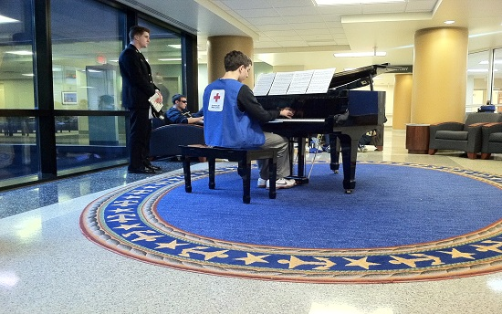
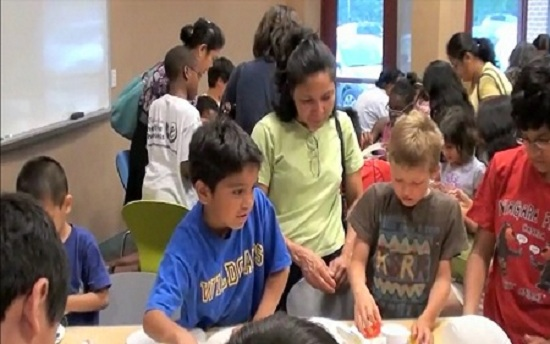
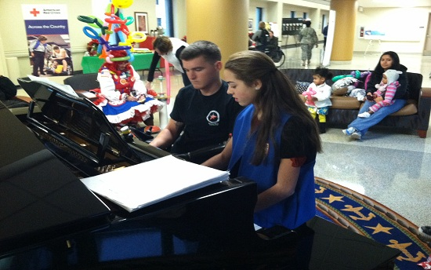
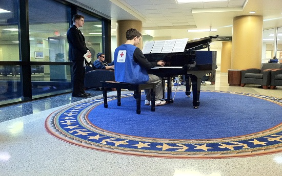
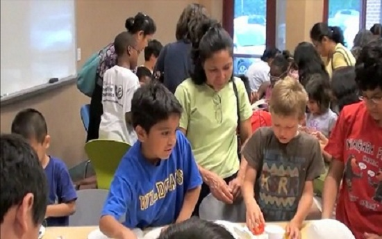
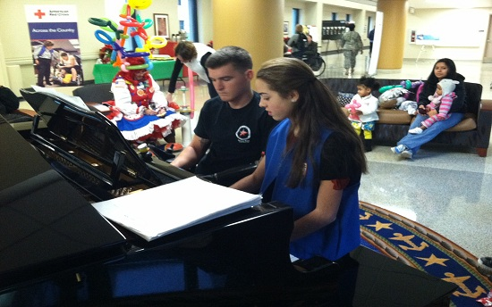

The Tacy Foundation is dedicated to supporting, empowering, and equipping individuals,
organizations, and communities to create positive change, to make a difference in
the lives of others, and to envision a better world.
Our most recent projects have focused on designing and producing music CDs specifically
for people in need in their time of healing. The music is performed by children,
young artists, and a few adult volunteers. The pieces range in style and difficulty
with some pieces composed specifically for the music project.
A local recording studio in Gaithersburg, Maryland prepares all of the CDs for assembly
by the children.